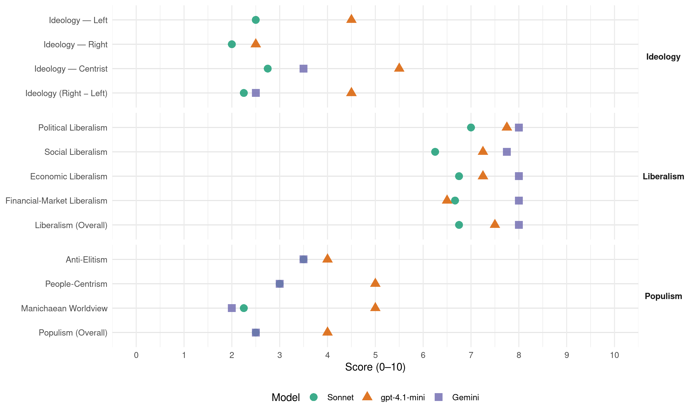

CiU (Spain, 1989)
manifesto_id 33611_198910
Get full text: This site shows derived annotations and short verbatim quotes only. The full manifesto text is © Manifesto Project / WZB — obtain it via manifesto-project.wzb.eu using the manifesto_id above.
Headline scores
| Dimension | Sonnet | gpt-4.1-mini | Gemini |
|---|---|---|---|
| Populism (Overall) | 2.5 | 4.0 | 2.5 |
| Anti-Elitism | 3.5 | 4.0 | 3.5 |
| People-Centrism | 3.0 | 5.0 | 3.0 |
| Manichaean Worldview | 2.2 | 5.0 | 2.0 |
| Ideology (Right − Left) | 2.2 | 4.5 | 2.5 |
| Liberalism (Overall) | 6.8 | 7.5 | 8.0 |
| Political Liberalism | 7.0 | 7.8 | 8.0 |
| Social Liberalism | 6.2 | 7.2 | 7.8 |
| Economic Liberalism | 6.8 | 7.2 | 8.0 |
| Financial-Market Liberalism | 6.7 | 6.5 | 8.0 |
Evidence per dimension
Economic Liberalism
Gemini · score 9.0 · verified · chunk 1
“liberalizar la economía y fomentar la acción empresarial”
1. ESTABILIZAR EL CRECIMIENTO Y CONTROLAR LA INFLACIÓN. LIBERALIZAR LA ECONOMÍA Y FOMENTAR LA ACCIÓN EMPRESARIAL. ESTIMULAR EL AHORRO
Gemini · score 9.0 · verified · chunk 2
“promover, prestar apoyo o autorizar la actividad empresarial”
en todo aquello que signifique promover, prestar apoyo o autorizar la actividad empresarial de nueva constitución.
Gemini · score 7.0 · verified · chunk 3
“desgravación fiscal - para los padres”
medidas legislativas adecuadas que permitan la desgravación fiscal - para los padres, los profesores y los centros
Gemini · score 7.0 · verified · chunk 4
“promoción de inversiones”
programas concretos de educación, transferencia de tecnología, cooperación económica y promoción de inversiones, lucha contra la droga
gpt-4.1-mini · score 8.0 · verified · chunk 1
“modernizar el sistema económico para conseguir situarlo al nivel de los países líderes”
4.3 LIBERALIZAR LA ECONOMÍA, FOMENTAR LA ACCIÓN EMPRESARIAL. Uno de los grandes retos que se plantea a la economía española en este período es el de modernizar el sistema económico para conseguir situarlo al nivel de los países líderes y así poder abandonar por fin el papel de furgón de cola en esta carrera.
gpt-4.1-mini · score 7.0 · verified · chunk 2
“Se elaborará el Programa de Actuación Industrial que revisara y coordinará todos los instrumentos económicos, financieros, fiscales y laborales”
…Durante el primer año de la legislatura se elaborará el Programa de Actuación Industrial que revisara y coordinará todos los instrumentos económicos, financieros, fiscales y laborales orientados a la mejora de la productividad y de la competitividad para facilitar el acceso a todos los sectores industriales y a todas las empresas.
gpt-4.1-mini · score 7.0 · verified · chunk 3
“Se promoverá la creación de una red de centros de transferencia de tecnología”
10.4 IMPULSO Y EXTENSION DE LA ENSEÑANZA UNIVERSITARIA. … Se fomentará una mayor interrelación en la colaboración entre los departamentos universitarios y las empresas públicas o privadas en tareas de asesoramiento, investigación y formación. Se promoverá la creación de una red de centros de transferencia de tecnología.
gpt-4.1-mini · score 7.0 · verified · chunk 4
“la participación de las Comunidades Autónomas en las decisiones comunitarias que afecten a la política regional”
El Gobierno favorecerá la participación de las Comunidades Autónomas en las decisiones comunitarias que afecten a la política regional, de acuerdo con lo establecido en la Decisión de la Comisión de 24 de junio de 1988, de creación del Consejo Consultivo de Entes Regionales y Locales. Se procederá a la ratificación inmediata del Convenio Marco de cooperación transfronteriza - que, paradójicamente, se llama Convención de Madrid - como forma de favorecer la cooperación de las zonas fronterizas de cara a su supresión en el marco del Mercado Unico.
Sonnet · score 7.0 · verified · chunk 1
“LIBERALIZAR LA ECONOMÍA Y FOMENTAR LA ACCIÓN EMPRESARIAL”
Los objetivos prioritarios en materia de política económica para los próximos cuatro años: LIBERALIZAR LA ECONOMÍA Y FOMENTAR LA ACCIÓN EMPRESARIAL
Sonnet · score 8.0 · verified · chunk 2
“programa gradual de privatización para determinadas empresas”
Con esta finalidad se limitará la expansión del sector público concurrencial, proponiendo un programa gradual de privatización para determinadas empresas.
Sonnet · score 6.0 · verified · chunk 3
“libertad de enseñanza y de elección de centro”
Este valor debe insertarse dentro del marco de los principios de libertad de enseñanza y de elección de centro, pluralismo social, autonomía, participación
Sonnet · score 6.0 · verified · chunk 4
“agriculturas más exigentes y competitivas”
los precios para la adaptación de las explotaciones agrarias a unas agriculturas más exigentes y competitivas.
Financial-Market Liberalism
Gemini · score 8.0 · verified · chunk 1
“desarrollo y la modernización del sistema financiero”
Se promoverá el desarrollo y la modernización del sistema financiero para que sirva a las necesidades del sistema productor.
Gemini · score 8.0 · verified · chunk 2
“permitiendo a la empresa acudir al mercado de capitales”
Mejora de la eficiencia, incrementando la competencia y permitiendo a la empresa acudir al mercado de capitales.
gpt-4.1-mini · score 7.0 · verified · chunk 1
“Se promoverá el desarrollo y la modernización del sistema financiero para que sirva a las necesidades del sistema productor”
4.3.2 Adaptar la política crediticia y financiera. El mercado financiero ha de adecuarse a las exigencias del Mercado Unico Europeo y de la competencia internacional. Se promoverá el desarrollo y la modernización del sistema financiero para que sirva a las necesidades del sistema productor.
gpt-4.1-mini · score 6.0 · verified · chunk 2
“Se considerarán desgravables del Impuesto de Sociedades los gastos de investigación y desarrollo tecnológico”
…Se considerarán desgravables del Impuesto de Sociedades los gastos de investigación y desarrollo tecnológico, bien sea directamente, bien sea a través de los recursos a centros cualificados.
Sonnet · score 7.0 · verified · chunk 1
“liberalización del mercado financiero”
en la línea de progresiva liberalización del mercado financiero, se trata de contribuir a la dinamización y la mejora de la eficacia de las entidades financieras
Sonnet · score 7.0 · verified · chunk 2
“acceso de los ciudadanos al mercado bursátil”
Aumento de la base accionarial, facilitando el acceso de los ciudadanos al mercado bursátil. Favorecimiento del acceso de los empleados a la tenencia de acciones que las empresas.
Sonnet · score 6.0 · verified · chunk 3
“líneas especiales de crédito”
Las donaciones y subvenciones a estas entidades gozarán de desgravaciones y líneas especiales de crédito. Revisión de las Leyes Fiscales, en especial el IRPF
Political Liberalism
Gemini · score 8.0 · verified · chunk 1
“La democracia y la libertad exigen un ejercicio respetuoso”
no participaría en una acción de gobierno que no sirviera a este compromiso. La democracia y la libertad exigen un ejercicio respetuoso, solvente y honrado
Gemini · score 8.0 · verified · chunk 2
“ejercicio de los derechos y deberes democráticos”
respeto al medio ambiente1 las relaciones sociales y el ejercicio de los derechos y deberes democráticos.
Gemini · score 8.0 · verified · chunk 3
“garantía de las libertades democráticas”
su correcto funcionamiento es una garantía de las libertades democráticas y del respeto a los derechos
Gemini · score 8.0 · verified · chunk 4
“derechos y libertades del individuo”
garantizar la seguridad de los ciudadanos y la protección del libre ejercicio de los derechos y libertades del individuo. En un Estado moderno
gpt-4.1-mini · score 8.0 · verified · chunk 1
“La democracia y la libertad exigen un ejercicio respetuoso, solvente y honrado”
La democracia y la libertad exigen un ejercicio respetuoso, solvente y honrado que, a veces, ha parecido incompatible con el estilo de ciertos comportamientos políticos. Afirmando este principio, que tendrá que presidir toda la acción de gobierno de CONVERGÉNCIA I UNIO, los objetivos fundamentales de su programa son los siguientes.
gpt-4.1-mini · score 7.0 · verified · chunk 2
“Se derogará la actual normativa que regula las elecciones sindicales, sustituyéndola por otra que garantice la igualdad de oportunidades electorales”
…Se derogará la actual normativa que regula las elecciones sindicales, sustituyéndola por otra que garantice la igualdad de oportunidades electorales a todos los sindicatos, poniendo en manos del poder judicial el control del proceso electoral sindical y la legitimación de sus resultados.
gpt-4.1-mini · score 8.0 · verified · chunk 3
“El articulo 24 de la Constitución proclama que”Todas las personas tienen derecho a obtener la tutela efectiva de los jueces y Tribunales”
18.1 ADMINISTRACIÓN DE JUSTICIA. El articulo 24 de la Constitución proclama que “Todas las personas tienen derecho a obtener la tutela efectiva de los jueces y Tribunales, en el ejercicio de sus derechos e intereses legítimos, sin que en ningún caso pueda haber indefensión.” El sistema judicial es uno de Pos pilares fundamentales del Estado de Derecho.
gpt-4.1-mini · score 8.0 · verified · chunk 4
“Es un derecho constitucional del Estado garantizar la seguridad de los ciudadanos”
XIX SEGURIDAD CIUDADANA. SEGURIDAD CIUDADANA. Es un derecho constitucional del Estado garantizar la seguridad de los ciudadanos y la protección del libre ejercicio de los derechos y libertades del individuo. En un Estado moderno, éste debe ser uno de los objetivos prioritarios. las causas de la inseguridad ciudadana y de la delincuencia son diversas y requieren de un tratamiento diversificado.
Sonnet · score 7.0 · verified · chunk 1
“La democracia y la libertad exigen”
La democracia y la libertad exigen un ejercicio respetuoso, solvente y honrado que, a veces, ha parecido incompatible con el estilo de ciertos comportamientos políticos
Sonnet · score 7.0 · verified · chunk 2
“Se aumentarán los controles y limitaciones en la ejecución de los presupuestos en el ámbito de la acción parlamentaria”
Se aumentarán los controles y limitaciones en la ejecución de los presupuestos en el ámbito de la acción parlamentaria del Congreso de los Diputados.
Sonnet · score 7.0 · verified · chunk 3
“independencia de los órganos jurisdiccionales”
Se propondrá la modificación de la Ley Orgánica del Poder judicial para mantener la independencia de los órganos jurisdiccionales. Se ha de volver al sistema de elección establecido en la Constitución
Sonnet · score 7.0 · verified · chunk 4
“El establecimiento de regímenes democráticos”
El establecimiento de regímenes democráticos en los países donde imperan todavía regímenes dictatoriales como Chile o Cuba.
Liberalism (Overall)
Gemini · score 8.0 · verified · chunk 1
“liberalizar la economía y fomentar la acción empresarial”
1. ESTABILIZAR EL CRECIMIENTO Y CONTROLAR LA INFLACIÓN. LIBERALIZAR LA ECONOMÍA Y FOMENTAR LA ACCIÓN EMPRESARIAL. ESTIMULAR EL AHORRO
Gemini · score 8.0 · verified · chunk 2
“promover, prestar apoyo o autorizar la actividad empresarial”
en todo aquello que signifique promover, prestar apoyo o autorizar la actividad empresarial de nueva constitución.
Gemini · score 8.0 · verified · chunk 3
“garantía de las libertades democráticas”
su correcto funcionamiento es una garantía de las libertades democráticas y del respeto a los derechos
Gemini · score 8.0 · verified · chunk 4
“derechos y libertades del individuo”
garantizar la seguridad de los ciudadanos y la protección del libre ejercicio de los derechos y libertades del individuo. En un Estado moderno
gpt-4.1-mini · score 8.0 · verified · chunk 1
“La democracia y la libertad exigen un ejercicio respetuoso, solvente y honrado”
La democracia y la libertad exigen un ejercicio respetuoso, solvente y honrado que, a veces, ha parecido incompatible con el estilo de ciertos comportamientos políticos. Afirmando este principio, que tendrá que presidir toda la acción de gobierno de CONVERGÉNCIA I UNIO, los objetivos fundamentales de su programa son los siguientes.
gpt-4.1-mini · score 7.0 · verified · chunk 2
“Se derogará la actual normativa que regula las elecciones sindicales, sustituyéndola por otra que garantice la igualdad de oportunidades electorales”
…Se derogará la actual normativa que regula las elecciones sindicales, sustituyéndola por otra que garantice la igualdad de oportunidades electorales a todos los sindicatos, poniendo en manos del poder judicial el control del proceso electoral sindical y la legitimación de sus resultados.
gpt-4.1-mini · score 8.0 · verified · chunk 3
“El articulo 24 de la Constitución proclama que”Todas las personas tienen derecho a obtener la tutela efectiva de los jueces y Tribunales”
18.1 ADMINISTRACIÓN DE JUSTICIA. El articulo 24 de la Constitución proclama que “Todas las personas tienen derecho a obtener la tutela efectiva de los jueces y Tribunales, en el ejercicio de sus derechos e intereses legítimos, sin que en ningún caso pueda haber indefensión.” El sistema judicial es uno de Pos pilares fundamentales del Estado de Derecho.
gpt-4.1-mini · score 7.0 · verified · chunk 4
“Es un derecho constitucional del Estado garantizar la seguridad de los ciudadanos”
XIX SEGURIDAD CIUDADANA. SEGURIDAD CIUDADANA. Es un derecho constitucional del Estado garantizar la seguridad de los ciudadanos y la protección del libre ejercicio de los derechos y libertades del individuo. En un Estado moderno, éste debe ser uno de los objetivos prioritarios. las causas de la inseguridad ciudadana y de la delincuencia son diversas y requieren de un tratamiento diversificado.
Sonnet · score 7.0 · verified · chunk 1
“marco normativo que facilite y apoye un proceso de liberalización”
La mejora de la competitividad requiere un marco normativo que facilite y apoye un proceso de liberalización y desregulación del sistema productivo
Sonnet · score 7.0 · verified · chunk 2
“programa gradual de privatización para determinadas empresas”
Con esta finalidad se limitará la expansión del sector público concurrencial, proponiendo un programa gradual de privatización para determinadas empresas.
Sonnet · score 7.0 · verified · chunk 3
“independencia de los órganos jurisdiccionales”
Se propondrá la modificación de la Ley Orgánica del Poder judicial para mantener la independencia de los órganos jurisdiccionales
Sonnet · score 6.0 · verified · chunk 4
“defensa de los derechos humanos en todo el mundo”
La política exterior española deberá inspirarse en los principios de: La paz. La no ingerencia. Las soluciones negociadas en los conflictos internacionales. La solidaridad. La defensa de los derechos humanos en todo el mundo.
Anti-Elitism
Gemini · score 4.0 · verified · chunk 1
“ejercicio prepotente de su mayoría absoluta”
Siete años de gobierno socialista, mediante el ejercicio prepotente de su mayoría absoluta han puesto de manifiesto, el agotamiento
Gemini · score 3.0 · verified · chunk 2
“El Gobierno socialista ha tenido más en cuenta”
insuficiente El Gobierno socialista ha tenido más en cuenta la gran industria de titularidad pública
gpt-4.1-mini · score 6.0 · verified · chunk 1
“el agotamiento de un modelo que, si bien inicialmente, podía presentarse bajo la imagen de un cambio de progreso, presenta actualmente un balance preocupante de desequilibrios, conflictos, intervencionismo, centralismo y secuestro de la sociedad civil”
Siete años de gobierno socialista, mediante el ejercicio prepotente de su mayoría absoluta han puesto de manifiesto, el agotamiento de un modelo que, si bien inicialmente, podía presentarse bajo la imagen de un cambio de progreso, presenta actualmente un balance preocupante de desequilibrios, conflictos, intervencionismo, centralismo y secuestro de la sociedad civil. Una política de aparador que ha sustituido la ilusión por Ja estadística y la eficacia por el control, define una situación preocupante, especialmente si tenemos en cuenta los grandes retos que nos corresponde enfrentar de cara a los próximos años 90.
gpt-4.1-mini · score 2.0 · verified · chunk 2
“El Gobierno socialista ha tenido más en cuenta la gran industria de titularidad pública”
…competencia de las grandes industrias multinacionales. - Se frenará la venta de industrias españolas al exterior cuando puedan ser adquiridas por capitales autóctonos. - Se garantizará a aquellas industrias sometidas a una demanda cambiante, e imposible de prever por razones de la moda (textil, confección, piel, etc.), unas relaciones laborales que combinen la garantía de los derechos del trabajador con la rápida y no costosa adaptación de la producción a la demanda. A tal electo, la declaración objetiva de situación de crisis por razón de la demanda justificará el expediente de regulación temporal de la plantilla, sin que ésta compute a efectos de consumo en el seguro de desempleo. - CiU impulsará una política específica de apoyo a la formación de técnicos superiores y de grado medio en el sector industrial, así como una política de colaboración Universidad-Empresa en los ámbitos de la formación, de la investigación y del desarrollo de productos. Solamente si se aproximan las grandes diferencias que existen hoy entre estos dos mundos, podrá impulsarse una política industrial coherente y competitiva. - Se realizará un programa para la creación de centros de ayuda a la industria. £n primer lugar, se pondrá en marcha un Centro de transferencia tecnológica destinado a prestar servicios eficaces a las empresas en este ámbito. - Las funciones y características del INI (Instituto Nacional de Industria) y sus empresas se replantearán para relanzar aquellas empresas que, por sus características hayan de mantenerse en el sector público, se privatizarán las que puedan prestar un mejor servicio desde el sector privado.
Sonnet · score 5.0 · verified · chunk 1
“ejercicio prepotente de su mayoría absoluta”
Siete años de gobierno socialista, mediante el ejercicio prepotente de su mayoría absoluta han puesto de manifiesto, el agotamiento de un modelo
Sonnet · score 3.0 · verified · chunk 2
“El Gobierno socialista ha tenido más en cuenta la gran industria”
la mejora de la competitividad de las empresas españolas ha sido muy insuficiente. El Gobierno socialista ha tenido más en cuenta la gran industria de titularidad pública que el desarrollo de una política industrial encaminada a todo el tejido de pequeñas y medianas industrias.
Sonnet · score 3.0 · verified · chunk 3
“el Gobierno Socialista, en materia de justicia”
No puede decirse que los últimos años de actuación del Gobierno Socialista, en materia de justicia, hayan sido eficaces. Enfrentamientos continuos entre el Ejecutivo y el Poder judicial
Sonnet · score 3.0 · verified · chunk 4
“no ha sido nunca aplicada por el actual Gobierno Socialista”
Esta medida fue acordada por todos los Grupos Parlamentarios en el año 82 y no ha sido nunca aplicada por el actual Gobierno Socialista.
Ideology — Centrist
Gemini · score 4.0 · verified · chunk 1
“ejercicio prepotente de su mayoría absoluta”
Siete años de gobierno socialista, mediante el ejercicio prepotente de su mayoría absoluta han puesto de manifiesto, el agotamiento
Gemini · score 3.0 · verified · chunk 2
“El Gobierno socialista ha tenido más en cuenta”
insuficiente El Gobierno socialista ha tenido más en cuenta la gran industria de titularidad pública
gpt-4.1-mini · score 7.0 · verified · chunk 1
“Es un grito que invita a toda la sociedad a reaccionar con fuerza ante la situación actual”
Por esta razón el programa de CONVERGÉNCIA l UNIÓ se pone bajo la invocación de la expresión de FORÇA (Fuerza). Es un grito que invita a toda la sociedad a reaccionar con fuerza ante la situación actual; hace falta recuperar la fuerza del dinamismo, de la iniciativa, de la creatividad.
gpt-4.1-mini · score 4.0 · verified · chunk 2
“El Gobierno promoverá un conjunto de medidas fiscales destinadas a fomentar la inversión directa en el exterior”
…La penetración en mercados exteriores sólo se puede consolidar mediante el fortalecimiento de las redes comerciales exteriores o mediante el propio establecimiento de empresas españolas en el exterior. El Gobierno promoverá un conjunto de medidas fiscales destinadas a fomentar la inversión directa en el exterior En el Impuesto de Sociedades, las deducciones fiscales por inversiones en el extranjero se elevarán al 20%.
Sonnet · score 3.0 · verified · chunk 1
“acuerdos de amplia base política y social”
Los grandes retos que tenemos planteados exigirán a partir de ahora acuerdos de amplia base política y social. Ni la reforma fiscal
Sonnet · score 3.0 · verified · chunk 2
“diálogo, la negociación y la concertación social”
El diálogo, la negociación y la concertación social serán objetivos prioritarios de la acción de Gobierno. En el año 1990 y siguientes se procurará llegar a un acuerdo social con las organizaciones sindicales y empresariales.
Sonnet · score 2.0 · verified · chunk 3
“PACTO DE ESTADO, apoyado por todas las fuerzas políticas”
debe impulsarse un PACTO DE ESTADO, apoyado por todas las fuerzas políticas con representación parlamentaria, por medio del cual se adopten las medidas necesarias
Sonnet · score 3.0 · verified · chunk 4
“seguridad ciudadana”
Es un derecho constitucional del Estado garantizar la seguridad de los ciudadanos y la protección del libre ejercicio de los derechos y libertades del individuo. En un Estado moderno, éste debe ser uno de los objetivos prioritarios.
Ideology — Left
gpt-4.1-mini · score 6.0 · verified · chunk 1
“redistribución social del crecimiento económico”
3. Redistribución social del crecimiento económico. El hecho más importante de la última legislatura ha sido la constatación de que, para el gobierno socialista, las necesidades y problemas de amplios colectivos sociales no tenían ningún tipo de relevancia.
gpt-4.1-mini · score 3.0 · verified · chunk 2
“Se frenará la venta de industrias españolas al exterior cuando puedan ser adquiridas por capitales autóctonos”
…Se frenará la venta de industrias españolas al exterior cuando puedan ser adquiridas por capitales autóctonos. - Se garantizará a aquellas industrias sometidas a una demanda cambiante, e imposible de prever por razones de la moda (textil, confección, piel, etc.), unas relaciones laborales que combinen la garantía de los derechos del trabajador con la rápida y no costosa adaptación de la producción a la demanda.
Sonnet · score 4.0 · verified · chunk 1
“redistribución social del crecimiento económico”
3. Redistribución social del crecimiento económico. El hecho más importante de la última legislatura ha sido la constatación de que
Sonnet · score 2.0 · verified · chunk 2
“Equiparar de forma inmediata las pensiones mínimas al salario mínimo”
Equiparar de forma inmediata las pensiones mínimas al salario mínimo interprofesional, de manera que puedan garantizar un nivel digno de subsistencia.
Sonnet · score 2.0 · verified · chunk 3
“igualdad de oportunidades educativas y sociales”
política autonómica de becas y ayudas al estudio, de valor compensatorio y de gestión descentralizada, que potencie la igualdad de oportunidades educativas y sociales
Sonnet · score 2.0 · verified · chunk 4
“recursos que alcancen el 0,7 del PIB”
proporcionando en la próxima legislatura unos recursos que alcancen el 0,7 del PIB, según las recomendaciones de las Naciones Unidas.
Ideology (Right − Left)
Gemini · score 3.0 · verified · chunk 1
“ejercicio prepotente de su mayoría absoluta”
Siete años de gobierno socialista, mediante el ejercicio prepotente de su mayoría absoluta han puesto de manifiesto, el agotamiento
Gemini · score 2.0 · verified · chunk 2
“El Gobierno socialista ha tenido más en cuenta”
insuficiente El Gobierno socialista ha tenido más en cuenta la gran industria de titularidad pública
gpt-4.1-mini · score 6.0 · verified · chunk 1
“redistribución social del crecimiento económico”
3. Redistribución social del crecimiento económico. El hecho más importante de la última legislatura ha sido la constatación de que, para el gobierno socialista, las necesidades y problemas de amplios colectivos sociales no tenían ningún tipo de relevancia.
gpt-4.1-mini · score 3.0 · verified · chunk 2
“Se frenará la venta de industrias españolas al exterior cuando puedan ser adquiridas por capitales autóctonos”
…Se frenará la venta de industrias españolas al exterior cuando puedan ser adquiridas por capitales autóctonos. - Se garantizará a aquellas industrias sometidas a una demanda cambiante, e imposible de prever por razones de la moda (textil, confección, piel, etc.), unas relaciones laborales que combinen la garantía de los derechos del trabajador con la rápida y no costosa adaptación de la producción a la demanda.
Sonnet · score 3.0 · verified · chunk 1
“progreso, crecimiento equilibrado y redistribución”
Progreso, crecimiento equilibrado y redistribución de la riqueza son los signos de identidad de Convergència i Unió en el campo económico
Sonnet · score 2.0 · verified · chunk 2
“El Gobierno socialista ha tenido más en cuenta la gran industria”
la mejora de la competitividad de las empresas españolas ha sido muy insuficiente. El Gobierno socialista ha tenido más en cuenta la gran industria de titularidad pública que el desarrollo de una política industrial encaminada a todo el tejido de pequeñas y medianas industrias.
Sonnet · score 2.0 · verified · chunk 3
“igualdad de oportunidades educativas y sociales”
política autonómica de becas y ayudas al estudio, de valor compensatorio y de gestión descentralizada, que potencie la igualdad de oportunidades educativas y sociales
Sonnet · score 2.0 · verified · chunk 4
“no ha sido nunca aplicada por el actual Gobierno Socialista”
Esta medida fue acordada por todos los Grupos Parlamentarios en el año 82 y no ha sido nunca aplicada por el actual Gobierno Socialista.
Ideology — Right
gpt-4.1-mini · score 3.0 · verified · chunk 1
“Cuatro años más de gobierno socialista constituyen una amenaza objetiva para la autonomía de Cataluña”
1. Despliegue sincero del Estado de las autonomías profundizando en las cotas de autogobierno de Cataluña. Cuatro años más de gobierno socialista constituyen una amenaza objetiva para la autonomía de Cataluña y, por extensión, cuestionan mandato constitucional de construir el Estado de las Autonomías.
gpt-4.1-mini · score 2.0 · verified · chunk 2
“Se impulsará la imagen de”marca” en el exterior a partir de la promoción selectiva y sectorial”
…Se impulsará la imagen de “marca” en el exterior a partir de la promoción selectiva y sectorial de determinados productos caracterizados por su calidad o diseño. Esto ha de permitir otorgar prestigio al ’Made in Spain”, según aquellas empresas y productos más dinámicos y competitivos, y en aquellas zonas con mayor potencial.
Sonnet · score 2.0 · verified · chunk 1
“profundizar en su autogobierno”
Fuerza para Cataluña, también: para profundizar en su autogobierno; para hacer posible su participación en la acción del gobierno
Sonnet · score 2.0 · verified · chunk 2
“imagen de”marca” en el exterior”
Se impulsará la imagen de “marca” en el exterior a partir de la promoción selectiva y sectorial de determinados productos caracterizados por su calidad o diseño. Esto ha de permitir otorgar prestigio al ‘Made in Spain’
Sonnet · score 1.0 · verified · chunk 3
“seguridad ciudadana”
Es un derecho constitucional del Estado garantizar la seguridad de los ciudadanos y la protección del libre ejercicio de los derechos y libertades del individuo. En un Estado moderno, éste debe ser uno de los objetivos prioritarios
Sonnet · score 3.0 · verified · chunk 4
“lucha eficaz contra la delincuencia”
los cuerpos policiales se encuentran a menudo en situaciones de incapacidad para llevar a cabo una lucha eficaz contra la delincuencia.
Manichaean Worldview
Gemini · score 2.0 · verified · chunk 1
“continuismo conformista de los socialistas”
Un programa con tuerza es, pues, la respuesta de CONVERGÉN CIA 1 UNIÓ al continuismo conformista de los socialistas. Las cosas se pueden
gpt-4.1-mini · score 5.0 · verified · chunk 1
“erradicando de la vida política española estilos prepotentes y actitudes Intemperantes tan negativas para el clima de convivencia”
Una nueva mayoría garantizará su estabilidad en el acuerdo que lo haga posible, erradicando de la vida política española estilos prepotentes y actitudes Intemperantes tan negativas para el clima de convivencia. En este sentido, hace falta enmarcar este programa y la acción de gobierno que propone, en un estilo diferente del ejercicio político.
Sonnet · score 3.0 · verified · chunk 1
“conformismo conformista de los socialistas”
Un programa con fuerza es, pues, la respuesta de CONVERGÉNCIA I UNIÓ al continuismo conformista de los socialistas. Las cosas se pueden hacer diferentes
Sonnet · score 2.0 · verified · chunk 2
“política fiscal que penalice a los establecimientos”
No se puede seguir practicando, como ha sucedido hasta el presente, una política fiscal que penalice a los establecimientos de categoría superior.
Sonnet · score 2.0 · verified · chunk 3
“visión uniformadora y centralista de la cultura española”
desde el Gobierno del Estado se ha proyectado hacia el exterior una visión uniformadora y centralista de la cultura española que distorsiona la realidad plurinacional
Sonnet · score 2.0 · verified · chunk 4
“fracasos más claros de la presidencia”
Esto constituye uno de los aspectos más negativos y uno de los fracasos más claros de la presidencia del Consejo de las Comunidades Europeas por parte de España.
People-Centrism
Gemini · score 3.0 · verified · chunk 1
“destinatario final de la acción política es la persona”
no olvidar que para CONVERGENCIA ¡ UNIÓ, el destinatario final de la acción política es la persona, considerada de forma individual.
gpt-4.1-mini · score 7.0 · verified · chunk 1
“Es un grito que invita a toda la sociedad a reaccionar con fuerza ante la situación actual; hace falta recuperar la fuerza del dinamismo, de la iniciativa, de la creatividad”
Por esta razón el programa de CONVERGÉNCIA l UNIÓ se pone bajo la invocación de la expresión de FORÇA (Fuerza). Es un grito que invita a toda la sociedad a reaccionar con fuerza ante la situación actual; hace falta recuperar la fuerza del dinamismo, de la iniciativa, de la creatividad. Es una invocación para actuar con fuerza, con coraje; es un programa para actuar con la fuerza que el momento reclama.
gpt-4.1-mini · score 3.0 · verified · chunk 2
“El Gobierno promoverá un conjunto de medidas fiscales destinadas a fomentar la inversión directa en el exterior”
…La penetración en mercados exteriores sólo se puede consolidar mediante el fortalecimiento de las redes comerciales exteriores o mediante el propio establecimiento de empresas españolas en el exterior. El Gobierno promoverá un conjunto de medidas fiscales destinadas a fomentar la inversión directa en el exterior En el Impuesto de Sociedades, las deducciones fiscales por inversiones en el extranjero se elevarán al 20%. - Se impulsará la imagen de “marca” en el exterior a partir de la promoción selectiva y sectorial de determinados productos caracterizados por su calidad o diseño.
Sonnet · score 4.0 · verified · chunk 1
“toda la sociedad a reaccionar con fuerza”
Es un grito que invita a toda la sociedad a reaccionar con fuerza ante la situación actual; hace falta recuperar la fuerza del dinamismo
Sonnet · score 2.0 · verified · chunk 2
“mejor servicio a los consumidores”
Esta Ley ha de facilitar que el desarrollo de la actividad comercial se realice con las debidas garantías para un mejor servicio a los consumidores, abriendo vías que transformen el comercio tradicional en las ciudades.
Sonnet · score 3.0 · verified · chunk 3
“acercar los bienes culturales al conjunto de los ciudadanos”
la función de la Administración es la de gestionar los recursos que la sociedad pone en sus manos para conseguir acercar los bienes culturales al conjunto de los ciudadanos
Sonnet · score 3.0 · verified · chunk 4
“seguridad de los ciudadanos”
Es un derecho constitucional del Estado garantizar la seguridad de los ciudadanos y la protección del libre ejercicio de los derechos y libertades del individuo.
Populism (Overall)
Gemini · score 3.0 · verified · chunk 1
“ejercicio prepotente de su mayoría absoluta”
Siete años de gobierno socialista, mediante el ejercicio prepotente de su mayoría absoluta han puesto de manifiesto, el agotamiento
Gemini · score 2.0 · verified · chunk 2
“El Gobierno socialista ha tenido más en cuenta”
insuficiente El Gobierno socialista ha tenido más en cuenta la gran industria de titularidad pública
gpt-4.1-mini · score 6.0 · verified · chunk 1
“el agotamiento de un modelo que, si bien inicialmente, podía presentarse bajo la imagen de un cambio de progreso, presenta actualmente un balance preocupante de desequilibrios, conflictos, intervencionismo, centralismo y secuestro de la sociedad civil”
Siete años de gobierno socialista, mediante el ejercicio prepotente de su mayoría absoluta han puesto de manifiesto, el agotamiento de un modelo que, si bien inicialmente, podía presentarse bajo la imagen de un cambio de progreso, presenta actualmente un balance preocupante de desequilibrios, conflictos, intervencionismo, centralismo y secuestro de la sociedad civil. Una política de aparador que ha sustituido la ilusión por Ja estadística y la eficacia por el control, define una situación preocupante, especialmente si tenemos en cuenta los grandes retos que nos corresponde enfrentar de cara a los próximos años 90.
gpt-4.1-mini · score 2.0 · verified · chunk 2
“El Gobierno socialista ha tenido más en cuenta la gran industria de titularidad pública”
…competencia de las grandes industrias multinacionales. - Se frenará la venta de industrias españolas al exterior cuando puedan ser adquiridas por capitales autóctonos. - Se garantizará a aquellas industrias sometidas a una demanda cambiante, e imposible de prever por razones de la moda (textil, confección, piel, etc.), unas relaciones laborales que combinen la garantía de los derechos del trabajador con la rápida y no costosa adaptación de la producción a la demanda. A tal electo, la declaración objetiva de situación de crisis por razón de la demanda justificará el expediente de regulación temporal de la plantilla, sin que ésta compute a efectos de consumo en el seguro de desempleo. - CiU impulsará una política específica de apoyo a la formación de técnicos superiores y de grado medio en el sector industrial, así como una política de colaboración Universidad-Empresa en los ámbitos de la formación, de la investigación y del desarrollo de productos. Solamente si se aproximan las grandes diferencias que existen hoy entre estos dos mundos, podrá impulsarse una política industrial coherente y competitiva. - Se realizará un programa para la creación de centros de ayuda a la industria. £n primer lugar, se pondrá en marcha un Centro de transferencia tecnológica destinado a prestar servicios eficaces a las empresas en este ámbito. - Las funciones y características del INI (Instituto Nacional de Industria) y sus empresas se replantearán para relanzar aquellas empresas que, por sus características hayan de mantenerse en el sector público, se privatizarán las que puedan prestar un mejor servicio desde el sector privado.
Sonnet · score 4.0 · verified · chunk 1
“insensibilidad social del gobierno socialista”
pone de manifiesto la insensibilidad social del gobierno socialista, incapaz de hacer llegar los efectos del crecimiento a los sectores sociales
Sonnet · score 2.0 · verified · chunk 2
“El Gobierno socialista ha tenido más en cuenta la gran industria”
la mejora de la competitividad de las empresas españolas ha sido muy insuficiente. El Gobierno socialista ha tenido más en cuenta la gran industria de titularidad pública que el desarrollo de una política industrial encaminada a todo el tejido de pequeñas y medianas industrias.
Sonnet · score 2.0 · verified · chunk 3
“el Gobierno Socialista, en materia de justicia”
No puede decirse que los últimos años de actuación del Gobierno Socialista, en materia de justicia, hayan sido eficaces
Sonnet · score 2.0 · verified · chunk 4
“no ha sido nunca aplicada por el actual Gobierno Socialista”
Esta medida fue acordada por todos los Grupos Parlamentarios en el año 82 y no ha sido nunca aplicada por el actual Gobierno Socialista.
Social Liberalism